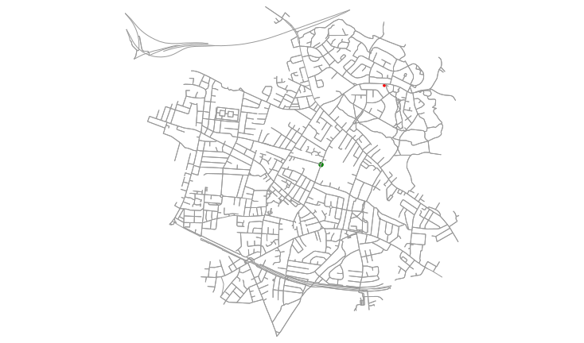

Motivation
I am a professional mathematician - coffee is essential to my wellbeing. Lunch is just about the right time of the day to want a 2nd coffee of the day, and get some fresh air and time not looking at the screen. Especially now that it’s not raining or snowing 100% of the time. Given a 60 minute lunch, what are my options? Does it become a massive pain if I decide I want a 30 minute lunch instead? Does it scale? Once I’ve done it for the Leeds Office, will the same code work for London?
Except the above motivation is inaccurate - I’m moving house and I want to be able to search precisely in the areas that will get me and my partner to work on time, given that we don’t want to set off before certain times, arrive after certain times, walk more than 30 mins to a train station, or change trains more than 3 times. Part of this has been putting stations I know fit the criteria into a similar script with a 2KM walking distance, and turning that into a great circle distance for putting into the house search websites.
From the perspecfive of the coding I’m doing, these problems are very similar. The latter is a long way from writeup, while I noodled for a small amount of time and got the former publishable. Consider this a work in progress, hence the “part 1”.
A brief explanation on Open Street Map (OSM)
Google has the data I want, but does not fall under “open data”. Sure, they’ll let me make a few queries, but once I start trying to do something on the order of trying to find the average minimum distance of a university to a pub in England, they’ll insist on me paying. And if we had a similar query for the purposes of public health, we’d need contracts, probably lawyers, purchase orders. Eugh. I hate raising purchase orders. Part of my enthusiasm for Free/Open Software & Data is ethics and being frugal, and part of it is not wanting to deal with purchase orders.
My summary of OSM is drawn from wiki. In 2004, the Ordinance Survey were taking massive amounts of public money doing mapping, but charging people for access. (This might surprise any Americans reading where the Federal Government has to release stuff Public Domain.) Just like with Wikipedia, people decided to collaborate for free rather than fewer people working for pay, and now we have a data set good enough for Apple to use instead of Google Maps. There is academic work on the accuracy of the data, same as with Wikipedia, but again people like going by gut feel of disliking stuff anyone can edit.
Work
I have been working with XML dumps of the England or West Yorkshire data, from https://download.geofabrik.de/ under the Open Database Licence. In the process, I’ve learned some XML, which is nice. There are 3 main types of object in OSM, and I’ve focused on 2 main subtypes: 1. nodes 2. ways 3. relations
Nodes are points, and I’ve largely used them for points where a road meets a junction, or as a point for a landmark. Ways are edges of some description, and I’m largely using the ones that are defined as some form of highway. Relations I’m not using, as they seem to mostly mark areas, and I’m not playing with that right now.
Python has some nice libraries for working with OSM. Networkx builds on the mathematical libraries, and adds a lot of graph theory functionality. Osmnx builds on networkx for specifically working with graphs derived from OSM.
In particular, I simultanesouly looked for libraries in Python and R, and I found one in Python that didn’t crash before I found one in R. I also miss working in Python, I only get R at work. I do some of the data filtering in (Osmosis](https://github.com/openstreetmap/osmosis) because it is so much faster than doing the same in Python. I will give enough data for you to reproduce the results, but I encourage you to get your own dumps and play with them.
The fact that it is a living database means that if you use anything but the dumps on my github you will get different results. You can confirm the authenticity of my dumps with history files for the database.
The program
One of my desires is that this will scale - therefore I was trying to avoid osmnx’s built in method to query the database over the net. If you abuse these servers, they ask that you run a local server instead. I’m very rusty on looking after databases, so I’m working on the England or West Yorkshire dump with Osmosis.
For local lookup of postcodes I grabbed the UK postcodes master file from ONS under the OGL and ran some basic filtering. In particular, for most of the current project I’m interested in Leeds, maybe Bradford.
If there are very few lookups, then the following function is adequate:
def postcode_to_point(path_to_file, postcode):
postcode_csv = path_to_data+path_to_file
with open(postcode_csv) as csvfile:
reader = csv.reader(csvfile, delimiter = ",")
for row in reader:
if row[1] == postcode:
lat, lon = float(row[2]), float(row[3])
return(lat, lon)With many lookups you’ll want to hold the database in memory. As ever, it’s a tradeoff, and my PC is aging a bit and one of its RAM slots doesn’t work. For this project, I only wanted my office’s coordinates once, so this was sufficient.
I did try looking up my office, but failed. I could read the documentation a bit more, and I’ve a few ideas for what I could search now, but if I waited until I could do everything perfectly, I’d still be in primary school.
So, I looked up my office for the postcode, and turned this to coordinates:
postcode = "LS2 7UE"
lat, lon = postcode_to_point("../Open Government Licence/leedspostcodes.csv", postcode)
centre = (lat, lon)
print(centre)## (53.7982290634403, -1.53125177705447)Another major point has been remembering which is longitude, and which is latitude. I’ve now basically remembered, but I’m not a fan of spherical geometry. There have been interesting times when I’ve been looking for houses somewhere in the middle of random oceans.
Networkx supports graphml, which is a lot simpler than OSM-formatted XML as long as you’re only working with a graph. So for the writeup I’m loading the graph of the walking network around my office.
Quarry_House_graph = ox.load_graphml("QH.xml", folder="../../static/data/OSM/")
nodes = Quarry_House_graph.nodes()
QH_node = ox.get_nearest_node(Quarry_House_graph, (lat, lon))A feature of osmnx is that it only graps nodes that lie on a way that it is importing. i.e. if you’re making a road map, it will only grab nodes that belong to roads. Offices do not belong to roads. Coffee shops do not belong to roads. So to work within the network, I want the nearest node to my office.
ox.plot_graph(Quarry_House_graph) This is relatively useful already, but of more interest to pure mathematics than analysis. The nodes (labelled blue) are the junctions on the road network. Most of the rest of the project is: 1. Getting all coffee shops within the boundaries of this graph. 2. Plotting the coffee shops instead of the junctions.
This is relatively useful already, but of more interest to pure mathematics than analysis. The nodes (labelled blue) are the junctions on the road network. Most of the rest of the project is: 1. Getting all coffee shops within the boundaries of this graph. 2. Plotting the coffee shops instead of the junctions.
Now, networkx and osmnx have the ability to set a node’s color attribute, but the plot commands don’t grab it, unlike when they grab the default weight/length attribute. I might dig into the networkx documentation (it’s a very, very big library) and if it has that feature port it to osmnx. For now I just slightly rewrote the plot command within osmnx.
Since osmnx (and networkx, and every other library I’m using) are Free/Open Source, I’m free to make changes to the software as I need.
Next I needed a bounding box for the graph so I can filter just the nodes that are near the office.
edges = ox.graph_to_gdfs(Quarry_House_graph, nodes=False, fill_edge_geometry=True)
west, south, east, north = edges.total_bounds
print(west, south, east, north)## -1.5598187 53.7833525 -1.5051721 53.8139123First I filter all nodes near the office, and then I filter those matching the cafe attribute. I might come back to this and look at other things near the office, so it makes sense to do the preprocessing in 2 parts.
osmosis --read-xml west-yorkshire-nodes.osm --bounding-box top=53.8139123 left=-1.5598187 right=-1.5051721 bottom=53.7833525 --write-xml QH.osm
osmosis --read-xml QH.osm --tf accept-nodes amenity=cafe --write-xml cafe_near_QH.osmSome simple XML parsing (using iterative parsing so I can throw away the bits of the file I’m not using, rather than keeping everything in memory) and I get the name and coordinates of every cafe in the bounding box.
def osm_find_interesting_nodes(path_to_file):
path_to_file = path_to_data +path_to_file
# Parse the xml structure and initialize variables.
e = xml.iterparse(path_to_file, events=("start", "end"))
e = iter(e)
event, root = next(e)
nodes = {}
# Create nodes and edges.
for event, i in e:
if event == "end" and i.tag == "node":
temp_dictionary = i.attrib
children = list(i)
for child in children:
child = child.attrib
if(len(child)>0):
if child["k"] == "name":
nodes[child["v"]] = dict((k,float(temp_dictionary[k])) for k in temp_dictionary if k in ("lat","lon"))
root.clear()
return nodes
coffee = osm_find_interesting_nodes("cafe_near_QH.osm" )Then I copy-pasted the main graph drawing function from osmnx and replaced it drawing the graph’s nodes with it drawing my special coffee shop nodes:
def plot_graph_and_landmarks(G, landmark_nodes, central_node, bbox=None, fig_height=6, fig_width=None, margin=0.02,
axis_off=True, equal_aspect=False, bgcolor='w', show=True,
save=False, close=True, file_format='png', filename='temp',
dpi=300, annotate=False, node_color='r', node_size=15,
node_alpha=1, node_edgecolor='none', node_zorder=1,
edge_color='#999999', edge_linewidth=1, edge_alpha=1,
use_geom=True):
node_Xs = [float(x["lon"]) for x in landmark_nodes.values()]
node_Ys = [float(y["lat"]) for y in landmark_nodes.values()]
# get north, south, east, west values either from bbox parameter or from the
# spatial extent of the edges' geometries
if bbox is None:
edges = ox.graph_to_gdfs(G, nodes=False, fill_edge_geometry=True)
west, south, east, north = edges.total_bounds
else:
north, south, east, west = bbox
# if caller did not pass in a fig_width, calculate it proportionately from
# the fig_height and bounding box aspect ratio
bbox_aspect_ratio = (north-south)/(east-west)
if fig_width is None:
fig_width = fig_height / bbox_aspect_ratio
# create the figure and axis
fig, ax = ox.plt.subplots(figsize=(fig_width, fig_height), facecolor=bgcolor)
ax.set_facecolor(bgcolor)
# draw the edges as lines from node to node
lines = []
for u, v, data in G.edges(keys=False, data=True):
if 'geometry' in data and use_geom:
# if it has a geometry attribute (a list of line segments), add them
# to the list of lines to plot
xs, ys = data['geometry'].xy
lines.append(list(zip(xs, ys)))
else:
# if it doesn't have a geometry attribute, the edge is a straight
# line from node to node
x1 = G.nodes[u]['x']
y1 = G.nodes[u]['y']
x2 = G.nodes[v]['x']
y2 = G.nodes[v]['y']
line = [(x1, y1), (x2, y2)]
lines.append(line)
# add the lines to the axis as a linecollection
lc = ox.LineCollection(lines, colors=edge_color, linewidths=edge_linewidth, alpha=edge_alpha, zorder=2)
ax.add_collection(lc)
# scatter plot the nodes
ax.scatter(node_Xs, node_Ys, s=node_size, c=node_color, alpha=node_alpha, edgecolor=node_edgecolor, zorder=node_zorder)
ax.scatter(central_node["x"], central_node["y"], s=2*node_size,c="g")
# set the extent of the figure
margin_ns = (north - south) * margin
margin_ew = (east - west) * margin
ax.set_ylim((south - margin_ns, north + margin_ns))
ax.set_xlim((west - margin_ew, east + margin_ew))
# configure axis appearance
xaxis = ax.get_xaxis()
yaxis = ax.get_yaxis()
xaxis.get_major_formatter().set_useOffset(False)
yaxis.get_major_formatter().set_useOffset(False)
# if axis_off, turn off the axis display set the margins to zero and point
# the ticks in so there's no space around the plot
if axis_off:
ax.axis('off')
ax.margins(0)
ax.tick_params(which='both', direction='in')
xaxis.set_visible(False)
yaxis.set_visible(False)
fig.canvas.draw()
if equal_aspect:
# make everything square
ax.set_aspect('equal')
fig.canvas.draw()
else:
# if the graph is not projected, conform the aspect ratio to not stretch the plot
if G.graph['crs'] == ox.settings.default_crs:
coslat = np.cos((min(node_Ys) + max(node_Ys)) / 2. / 180. * np.pi)
ax.set_aspect(1. / coslat)
fig.canvas.draw()
if annotate:
for i in landmark_nodes:
ax.annotate(i, xy=(float(landmark_nodes[i]["lon"]), float(landmark_nodes[i]["lat"])))#
# annotate the axis with node IDs if annotate=True
# save and show the figure as specified
fig, ax = ox.save_and_show(fig, ax, save, show, close, filename, file_format, dpi, axis_off)
return fig, ax
plot_graph_and_landmarks(G=Quarry_House_graph, landmark_nodes = coffee, central_node=nodes[QH_node], annotate=True)
We are almost there! There’s a few outside the confines of the graph, and because it’s a city centre the names are overlapping massively.
For demonstration purposes, I’m going to calculate the great circle distance (or distance as the crow flies) and the distance it takes to actually go through the road network. I’m calling the great circle distance “bird distance”, becuase I can. To filter by this, I need the circle boundary of the graph:
maximum = 0
nodes = Quarry_House_graph.nodes()
for node in nodes:
distance = ox.great_circle_vec(nodes[node]["y"], nodes[node]["x"], centre[0], centre[1])
if distance>maximum:
maximum = distance
Quarry_House_graph.nodes()[node]["bird distance"] = distanceFor the walking distance, I want the graph where every node is labelled with the walking distance from the office. This might sound wasteful, but to calculate any shortest path, you start by calculating all shortest paths.
shortest_paths = ox.nx.shortest_path_length(Quarry_House_graph, source=QH_node, weight="length")Then I add these two distances to my coffee shops:
for i in coffee:
coffee[i]["bird distance"] = ox.great_circle_vec(coffee[i]["lat"], coffee[i]["lon"], centre[0], centre[1])
nn=ox.get_nearest_node(Quarry_House_graph, (coffee[i]["lat"], coffee[i]["lon"]))
coffee[i]["nearest node"] = nn
coffee[i]["walking distance"] = shortest_paths[nn]+ ox.great_circle_vec(coffee[i]["lat"], coffee[i]["lon"],nodes[nn]["y"] ,nodes[nn]["x"])Since I’ve already thrown away all road data that’s off the boundary, the nearest node will always be in my target walking distance. So I’m estimating the error that induces by assuming that I walk to the edge of the graph, then fly in a straight line to the coffee shop.
Then I filter by bird distance, and plot again:
coffee = dict([(k, coffee[k]) for k in coffee.keys() if coffee[k]["bird distance"]< maximum])
plot_graph_and_landmarks(G=Quarry_House_graph, landmark_nodes = coffee, central_node=nodes[QH_node], annotate=False)
And we see that just using the bird distance gives me false info - there’s a bunch of coffeee shops in the North West that it says I can reach, but I really can’t! We’ve calculated the walking distance, so let’s filter by that:
coffee = dict([(k, coffee[k]) for k in coffee.keys() if coffee[k]["walking distance"]< maximum])
plot_graph_and_landmarks(G=Quarry_House_graph, landmark_nodes = coffee, central_node=nodes[QH_node], annotate=False)
That’s nice as a visualisation, but a table would also be useful.
coffee_distances = []
for i in coffee:
coffee_distances.extend([[i,coffee[i]["walking distance"]]])
with open("table.csv", "w") as csvfile:
writer = csv.writer(csvfile)
for coffee_shop in coffee_distances:
writer.writerow(coffee_shop)results <- read_csv("table.csv", col_names=FALSE)## Parsed with column specification:
## cols(
## X1 = col_character(),
## X2 = col_double()
## )results <- results %>%
rename(`name`=`X1`, `distance(m)`=`X2`) %>%
mutate(`distance(m)` = round(`distance(m)`)) %>%
arrange(`distance(m)`)
kable(results)| name | distance(m) |
|---|---|
| Cafe 164 | 337 |
| Relish Food | 413 |
| Pumpkin | 435 |
| Doghouse | 679 |
| Wapentake | 680 |
| Lincoln Green Internet Cafe | 707 |
| Hot Roast Cabin | 742 |
| Coffee 44 | 783 |
| Istanbul Cafe | 784 |
| San Co Co | 808 |
| World Football | 833 |
| Olympic | 840 |
| Tavassolis | 860 |
| Kitty Cafe | 882 |
| Global Tribe Cafe | 929 |
| Mrs Atha’s | 930 |
| Caffè Nero | 934 |
| Arch Cafe | 943 |
| Kapow Coffee | 949 |
| Kada’s | 975 |
| Pasta Romagna | 987 |
| Distinto | 989 |
| Yum Yum | 1011 |
| Costa | 1013 |
| The Greedy Pig | 1053 |
| Riveresque Cafe Bar | 1067 |
| Caffe Nero | 1105 |
| Nurture Cafe | 1150 |
| Dunkin Donuts | 1163 |
| Hotel Chocolat | 1206 |
| Wezy’s | 1242 |
| Rumbling Tum Cafe | 1243 |
| Shake Bar | 1274 |
| Laynes Espresso | 1292 |
| The Roast | 1303 |
| Tiled Hall Cafe | 1344 |
| The New Captain’s Table | 1378 |
| La Bottega Milanese | 1400 |
| Tomato Dip | 1419 |
| Caffè Ritazza | 1439 |
| Pret A Manger | 1452 |
| Behind The Town Hall | 1463 |
| Out of the Woods | 1513 |
| Union Coffee House | 1535 |
| Starbucks | 1557 |
| Deli Fifty Nine | 1579 |
| Grain | 1580 |
| Annas Snack Bar | 1621 |
| Cafe Centro | 1633 |
| Maes | 1647 |
| Panini Shack | 1655 |
| Cafe & Sandwich Bar | 1662 |
| Early Bird Cafe | 1691 |
| Bagel Nash | 1695 |
| Cafe Leep | 1741 |
| Costa Coffee | 1757 |
| LIMM café | 1766 |
| Family Internet Cafe | 1790 |
| Salam Internet Cafe | 1791 |
| Philpotts | 1829 |
| Starbucks Coffee | 1847 |
| Juici Sushi | 1849 |
| Abyssinia Cafe And Restaurant | 1881 |
Of course, if I decide I want a 30 min lunch rather than 60 (as I usually do) I can just read the table up to the 1km mark, or take a subgraph of the above graphs. I’d have to pretty much start over if I wanted a bigger distance, so in this case it’s probably better to overesimtate rather than under.
next stages
In writing this up I’ve discovered that networkx considers itself more of a graph analysing package than a drawing package, and gives recommendations. I’m going to look at them.
There’s potentially some optimisations I can make to osmnx in terms of reading large osm files. I’d also like to give a bounding circle argument to osmosis rather than doing that part of preprocessing in Python.
I’ve got Tasker for Android, which lets me do practically any action on the phone in response to practically any trigger. I’m going to log my walking speed over a day or so (possibly passively tracking the whole day, then filter everything that’s stationary or too fast). This is going to have to wait until I’m not nauseous enough to walk at full speed.
With a tiny bit of Javascript, I can switch between static images on the server. I might pick some points of interest and go through different visualisations of what is near.
I’ve many project ideas just with nodes and edges in OSM.  Yes, there is exactly one cafe near my partner’s work. I was going to search for ice cream shops or anything she’s more interested in than coffee, but there’s nothing in the OSM tags that’s actually near her work.

Share this post
Twitter
Google+
Facebook
Reddit
LinkedIn
Pinterest
Email